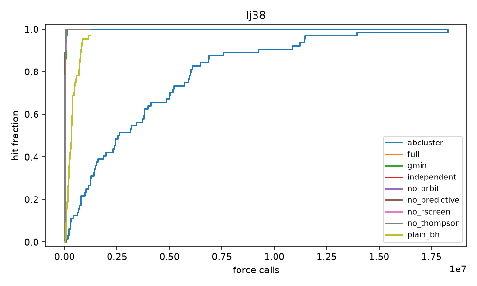

Proves the Good-Turing census identities (hatch identity, visit floor, squared-conductance bound, retirement rule) in Lean, with declarations listed per identity.
Abstract
The global minimum of a cluster decides which structure a simulation predicts. We present anneal, a global optimizer of communicating chains. Each chain draws its move by Thompson sampling from a Normal-Gamma posterior on quench depth. A stalled chain completes the orbits of a symmetric core. A chain retires on a Good-Turing estimate of its unseen mass, a rule with a Lean derivation. The chains share minima through an annealed-flow bank, and a ledger charges each force call to the chain that spent it. On 64 shared starts of LJ$_{38}$ and LJ$_{75}$ the hop matches the hit rate of GMIN, 64 of 64, at a lower median cost a paired test does not separate. On the Cambridge Morse table it reaches 145 of 244 targets and GMIN 131.
Problem
Global optimization of atomic clusters needs the global minimum at low force-call cost. Existing multi-chain searches are retuned for each system, and none keeps a posterior on move depth or an estimate of the unseen mass of its census.
Approach
anneal is an open-source optimizer, built in Rust, that runs communicating chains. Each chain picks its next move by Thompson sampling from a Normal-Gamma posterior on quench depth, and a stalled chain symmetrises its cluster onto a nearby point group. A chain retires on a Good-Turing estimate of unseen mass, and minima are shared through a rank-weighted annealed-flow bank with a per-chain force-call ledger. The hatch identity, visit floor, squared-conductance bound and retirement rule are proved in Lean, with the declarations listed in an appendix table at tag v0.11.1.
Results
From 64 shared starts of LJ38 and LJ75, anneal reaches the global minimum in 64 of 64 runs, matching GMIN, at a lower median cost that a paired test does not separate. On the Cambridge Morse table it reaches 145 of 244 targets against 131 for GMIN.

Figure 3: Fraction of the 64 shared starts that reach the global minimum against the force calls spent, for every code and arm of Table 5 and of the ablation in the Supporting Information, LJ 38 on the left and LJ 75 on the right.